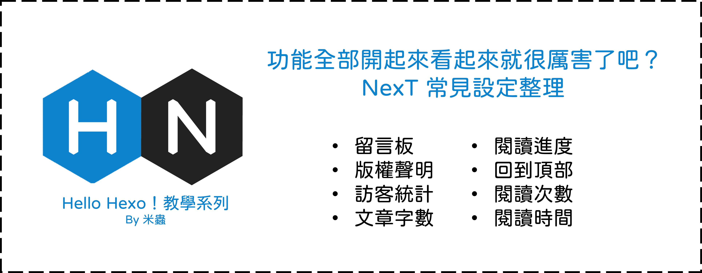

Hello Hexo！功能全部開起來看起來就很厲害了吧？NexT常見設定整理 (4)
前言

Next之所以受到歡迎，一大原因是因為NexT將很多常用的功能都整合進入主題當中，只要修改一下主題設定檔(config)、下載一下插件(plugins)，就能實現大部分的功能，今天就帶大家看一些常見的功能在NexT主題下要如何實現。
大綱
功能
留言板
留言板是一個很奇妙的東西，雖然心裡想到底有誰會來留言，但沒有的話又好像少了些什麼，所以姑且還是放一下XD。
NexT支援多種留言版插件，網路上推薦使用的是disqus或utterances (gitalk因為權限要求過高所以沒什麼推薦了)，二選一的情況下，disqus要另外去註冊一個帳號有點麻煩，反觀utterances可以直接連結github repository來儲存評論，且外觀比較簡潔，所以最後決定使用utterances。
-
到utterances app把app安裝到github上，將權限開給指定的專案repository。(我是直接跟部落格使用同一個，當然你也可以另外開一個新的repository。)
-
找到
next/_config.yml中的utterances，將enable改成true，在repo填入剛剛開啟權限的repository名稱，舉例來說我是填MengChiehLiu/MengChiehLiu.github.io，theme參數可以設定不同留言板風格，大家可以自己試試看。
1 | utterances: |
- 最後如果你希望留言板只出現在文章頁面，而不要出現在其他page(ex: 標籤頁、分類頁)的話，那要到page下的
index.md下修改標頭檔。
1 | --- |
版權聲明
找到next/_config.yml中的creative_commons，將post改成true就可以了，協議的版本可以參考About CC Licenses自己做挑選。
1 | creative_commons: |
我自己覺得預設的內容就挺不錯的，不過也可以自訂內容，這邊提供一篇不錯的文章給有興趣的人:
閱讀進度
找到next/_config.yml中的reading_progress，將enable改成true，開啟後會在網頁頂部/底部顯示閱讀進度條。
1 | reading_progress: |
回到頂部
就是網頁往下滑右下角會出現的那個箭頭，按下去會回到網頁的頂部，找到next/_config.yml中的back2top，將enable改成true。
1 | back2top: |
訪客統計、文章閱讀統計
不蒜子是一款極簡的前端計數工具，NexT已經幫我們將不蒜子整合在主題當中，只要修改next/_config.yml中的busuanzi_count，將enable改成true，就可以啟用訪客統計、文章閱讀次數的功能。
1 | busuanzi_count: |
文章字數、閱讀時間
- 下載
hexo-word-counter插件
1 | npm install hexo-word-counter |
- 在Hexo的config檔中(主目錄裡的)加入下面設定
1 | symbols_count_time: |
wpm官方文檔中給的建議是
Slow ≈ 200
Normal ≈ 275
Fast ≈ 350
如果主要是中文的話可以設300，中英夾雜維持275就好。
- 這個插件有被整合進NexT當中，在完成前一個步驟後，我們可以修改theme config來調整外觀顯示
1 | post_meta: |
不顯示文字的話就不會有
文章字數：和所需閱讀時間 ≈，只會有最前面的圖示。
其他
站內搜尋、主選單等功能我在這篇文章中有介紹過了，有興趣的人可以去看看。
預告
下一篇文章會帶大家美化部落格!包括更換背景圖片、變更字體以及其他風格設定~